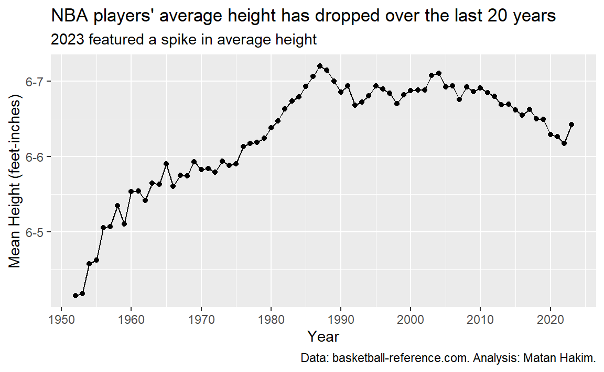
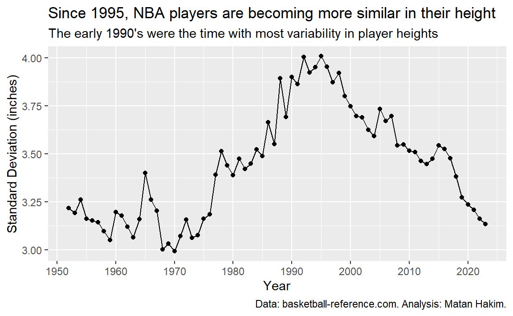
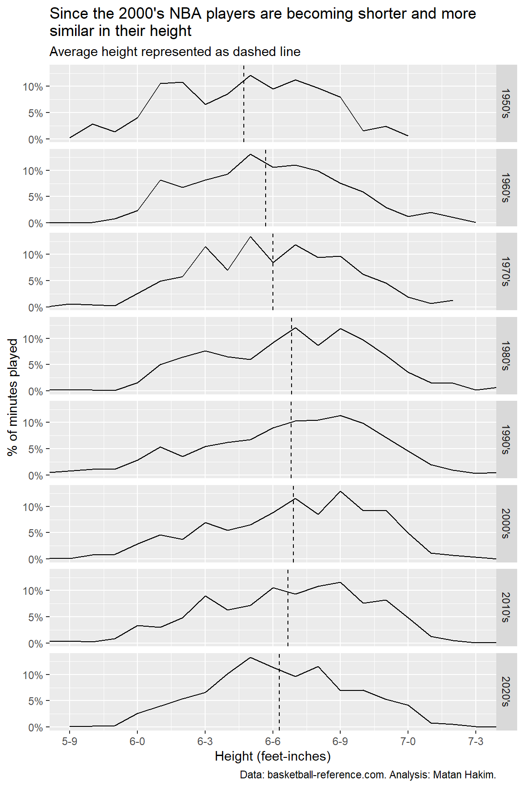
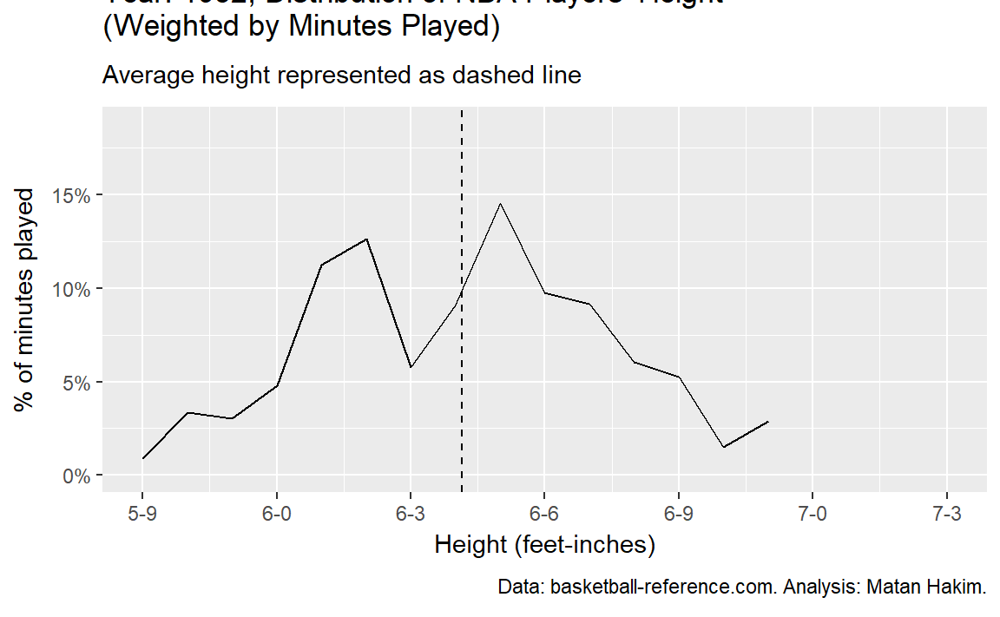

library(tidyverse)
library(rvest)
library(janitor)
library(scales)
library(jtools)
library(gganimate)
library(conflicted)
conflicts_prefer(dplyr::filter())Introduction
It’s hard to point on the specific moment where my passion for the NBA started. It might have been somewhere during the 1997-98 season, when I remember myself having a huge Michael Jordan poster hanging over my bed. I was in second grade, barely knowing what basketball even is, but I had to have MJ with me. It might have been during 8th grade, When my friend and I started playing NBA Live 2005 on our PCs, following that with backyard imitations of Kobe Bryant and Lebron James. It even might have been while watching the 2008 NBA Finals live (game started on 3AM Israel time, mind you), and being part of the amazing “Anything’s possible” moment from Kevin Garnett. But I guess the moment the NBA really captured me was during the 2014-15 season, the season that featured rise of Steph Curry and the Golden Warriors, alongside the new era of NBA analytics.
Since then, I am a regular follower of NBA content, specifically everything related to NBA data and analytics. For example, I’m a huge fan of the “Thinking Basketball” Youtube Channel by Ben Taylor, who is a master of bringing data and context together. Additionally, as an Israeli and a Hebrew speaker, I regularly follow the “7 Seconds or Less” Podcast (in Hebrew) by Yuval Oz and Oren Levi, who enjoy having discussions around evolving trends and shifts, rather than the latest “Woj Bomb”. These conversations tend to revolve around many topics, but one of the latest themes I found most interesting is NBA players’ height.
So, the question that guided me was “what are the trends regarding NBA players’ height over the years?”. Specifically, I was interested in the average height (a measure of central tendency) and the standard deviation of height (a measure of spread), and their evolution over time. Finally, I thought it was proper to analyse effective height, meaning the height of the players playing on the court, rather than the height of players on a team. For example, let’s compare Boban Marjanović and Trae Young. Marjanović, the tallest player in the 2022-23 NBA season standing at 7-3, played a total of 171 minutes for the Houston Rockets on that season. On the other hand, Young, standing at merely 6-1, played a total of 2,541 minutes for the Atlanta Hawks during the 2022-23 season - almost 15 times more minutes played than Marjanović. Obviously, we need to take these differences into account, and this is why I weighted the different statistics by minutes played.
This blog post describes both the process data collection and manipulation with the R programming language, and the final visuals with some explanatory text. Now, you might be here for either (or both!) of these reasons: data analysis with R, or NBA. If you’re not interested in R code involving web scraping, data manipulation and visualization, you can skip ahead to the NBA players’ height over the years section.
Let’s dive right in!
Code
Setup
Let’s load the relevant packages.
Import data
Total minutes played for every player in every season
Let’s start by defining a function to read the data on every player on a specific season. This is where the “minutes played” stat comes from, so it’s important. This function scrapes the Basketball Reference website using the rvest package, and returns a tibble of every player’s name registered in that season, alongside its position, age, and minutes played. You’ll see why position and age matter in a minute!
read_season <- function(year) {
1 Sys.sleep(4)
read_html(str_c("https://www.basketball-reference.com/leagues/NBA_", year, "_totals.html")) |>
html_element("table") |>
html_table() |>
clean_names() |>
2 filter(str_detect(rk, "[:digit:]")) |>
select(player, pos, age, mp)
}- 1
- Pause between requests to avoid hitting the rate limit of 20 requests in a minute.
- 2
- Remove repeating header rows.
After defining our function, let’s map it over every season, starting from 1952.
df_seasons_raw <- tibble(year = 1952:2023) |>
mutate(data = map(year, read_season)) |>
unnest(data)All players
In our previously collected data set we don’t have any data on the players’ heights! So, we need to collect this for every player to ever play in the league. This function reads data for all players whos family name starts with the same letter. it returns a tibble with player name, NBA carreer first and last year, height, position, birth date and college.
read_players_letter <- function(letter) {
1 Sys.sleep(4)
read_html(str_c("https://www.basketball-reference.com/players/", letter)) |>
html_element("table") |>
html_table() |>
clean_names() |>
2 filter(str_detect(from, "[:digit:]")) |>
3 mutate(player = str_remove_all(player, "\\*"))
}- 1
- Pause between requests to avoid hitting the rate limit of 20 requests in a minute.
- 2
- Remove repeating header rows.
- 3
- Remove asterisk from player name (indicating members of the Hall of Fame).
Now, let’s map this function over every letter (besides “x”, a letter with no NBA players family names) to create our data set.
letters_no_x <- letters[letters != "x"]
df_players_raw <- map(letters_no_x, read_players_letter) |>
list_rbind()Manipulate data
Join data frames
If we have tried joining the two data sets, we would encounter a problem: some NBA players have the same name! Let’s see this:
df_players_raw |>
count(player, sort = TRUE) |>
head(n = 10) |>
knitr::kable()| player | n |
|---|---|
| Charles Jones | 3 |
| Charles Smith | 3 |
| George Johnson | 3 |
| Bill Bradley | 2 |
| Bob Duffy | 2 |
| Bobby Jones | 2 |
| Bobby Wilson | 2 |
| Brandon Williams | 2 |
| Cedric Henderson | 2 |
| Chris Johnson | 2 |
We have 3 different players for each of Charles Jones, Charles Smith, and George Johnson! We need to come up with a way to differentiate between them. This is where birth date comes in.
df_players <- df_players_raw |>
1 separate(ht, into = c("ht_feet", "ht_inches"), sep = "-", remove = FALSE) |>
mutate(
2 ht_tot_inches = parse_double(ht_feet) * 12 + parse_double(ht_inches),
ht_tot_cm = ht_tot_inches * 2.54,
3 birth_date = parse_date_time(birth_date, "bdy"),
birth_year = year(birth_date),
4 birth_year_effective = if_else(
month(birth_date) > 1,
birth_year + 1,
birth_year
)
)- 1
- Separate height to feet and inches.
- 2
- Calculate total height.
- 3
- extract birth year from birth date.
- 4
- Calculate effective birth year - the player’s age shown is its age during February 1st of that season.
df_seasons <- df_seasons_raw |>
mutate(
1 player = str_remove_all(player, "\\*"),
birth_year_effective = year - age
)- 1
- Remove asterisk from player name (indicating members of the Hall of Fame).
Now we’re ready to join the data sets by name and by birth year.
df_all <- df_seasons |>
left_join(df_players, join_by(player, birth_year_effective)) |>
mutate(
1 decade = (year - year %% 10) |>
factor() |>
str_c("'s")
)- 1
- Calculate decade, turn it to a factor and add an “’s” prefix.
Calculate (weighted) mean height
Let’s define a function to calculate a weighted mean height by one or more variables.
weighted_mean_by <- function(data, mean_var, by_vars, weights) {
data |>
1 group_by({{ by_vars }}) |>
summarise(
mean = weighted.mean({{ mean_var }}, {{ weights }}),
sd = wtd.sd({{ mean_var }}, {{ weights }}),
sd_upper = mean + sd,
sd_lower = mean - sd,
.groups = "drop"
)
}- 1
- The double curly brackets use the idea of “tidy evaluation”. for more on this, go to R4DS (2e)
Let’s calculate these stats for every year and for every decade.
df_mean_years <- df_all |>
weighted_mean_by(ht_tot_inches, year, mp)
df_mean_decades <- df_all |>
weighted_mean_by(ht_tot_inches, decade, mp)Calculate (weighted) frequency by minutes played
Now, Let’s get to the heart of this analysis. We’ll define a function that takes all of the NBA players, and calculates the weighted relative frequency of every height for a specific period. In simpler words, it computes the percent of minutes played by every height during a year or a decade.
summarize_heigths <- function(data, var, by_vars, weights = NULL) {
data |>
count({{ by_vars }}, {{ var }}, wt = {{ weights }}) |>
mutate(
.by = {{ by_vars }},
pct = n / sum(n),
)
}
df_heights_years <- df_all |>
summarize_heigths(ht_tot_inches, by_vars = year, weights = mp)
df_heights_decades <- df_all |>
summarize_heigths(ht_tot_inches, by_vars = decade, weights = mp)Visualization
Utility functions
This function converts a height from inches only (which is better for computation) to a feet-inches format (which is better for presentation).
inches_to_feet <- function(x) {
str_c(
x %/% 12,
x %% 12,
sep = "-"
)
}These will serve us for more reasonable axes labels.
breaks_height <- (23:29) * 3
labels_height <- inches_to_feet(breaks_height)Mean height by year
p1 <- df_mean_years |>
ggplot(aes(year, mean)) +
geom_line() +
geom_point() +
scale_y_continuous(labels = inches_to_feet) +
scale_x_continuous(breaks = seq(1950, 2020, 10)) +
labs(
title = "NBA players' average height has dropped over the last 20 years",
subtitle = "2023 featured a spike in average height",
x = "Year",
y = "Mean Height (feet-inches)",
caption = "Data: basketball-reference.com. Analysis: Matan Hakim."
)Standard deviation by year
p2 <- df_mean_years |>
ggplot(aes(year, sd)) +
geom_line() +
geom_point() +
scale_x_continuous(breaks = seq(1950, 2020, 10)) +
labs(
title = "Since 1995, NBA players are becoming more similar in their height",
subtitle = "The early 1990's were the time with most variability in player heights",
x = "Year",
y = "Standard Deviation (inches)",
caption = "Data: basketball-reference.com. Analysis: Matan Hakim."
)Distribution by decade
p3 <- df_heights_decades |>
ggplot(aes(ht_tot_inches, pct)) +
geom_line() +
geom_vline(data = df_mean_decades, aes(xintercept = mean), linetype = "dashed") +
facet_wrap(~ decade, ncol = 1, strip.position = "right") +
scale_x_continuous(breaks = breaks_height, labels = labels_height) +
coord_cartesian(xlim = range(breaks_height)) +
scale_y_continuous(labels = label_percent()) +
labs(
title = str_wrap(
"Since the 2000's NBA players are becoming shorter and more similar in their height",
width = 60
),
subtitle = "Average height represented as dashed line",
x = "Height (feet-inches)",
y = "% of minutes played",
caption = "Data: basketball-reference.com. Analysis: Matan Hakim."
)Distribution by year (animation)
For this last plot, we will unlock the amazing potential of the gganimate package.
p4 <- df_heights_years |>
left_join(df_mean_years, join_by(year)) |>
ggplot(aes(ht_tot_inches, pct)) +
geom_line() +
scale_y_continuous(labels = label_percent()) +
scale_x_continuous(breaks = breaks_height, labels = labels_height) +
coord_cartesian(xlim = range(breaks_height)) +
transition_time(year) +
geom_vline(
aes(xintercept = mean),
linetype = "dashed"
) +
labs(
title = str_c(
"Year: {frame_time}, Distribution of NBA Players' Height",
"\n",
"(Weighted by Minutes Played)"
),
subtitle = "Average height represented as dashed line",
x = "Height (feet-inches)",
y = "% of minutes played",
caption = "Data: basketball-reference.com. Analysis: Matan Hakim."
) +
shadow_mark(past = FALSE, future = FALSE)NBA players’ height over the years
If you’ve made it so far, it means you are really into NBA player’s heights! Let’s see how the average player height faired over the years (again, weighted by minutes played).

As we can see, we have 3 different eras for NBA heights. Since the 1950’s until 1987, the average height kept growing, going from just above 6-4 to just above 6-7. Between 1988 and 2004 we can see a small decrease following a small increase in average height, going around (and mostly a bit under) 6-7. Since then, we can see a slow and steady decrease until 2022, where the average NBA player height was 6-6.25, just like in 1979. Interestingly, 2023 featured a spike in average player height, compensating for a 3-years worth of decrease.
It seems that the decrease in average player height might be a part of the “small-ball” revolution, coinciding with an uptick in 3-point shots. Nevertheless, this recent spike in average height might hint towards the future trends and how NBA teams might utilize longer players to disrupt offenses with greater effect.
After looking at average height. let’s look ate the variability of heights. We’ll use the measure of standard deviation. A smaller standard deviation represents a year where heights were closer to the average, while a larger standard deviation represents a year where heights were less closer to the average.

This shows an interesting and different perspective. Since the 1950’s until 1976, height’s standard deviation remained fairly constant. beginning in 1977 and until 1995, height’s standard deviation rose constantly. finally, since 1996, height’s standard deviation was on a downwards trend, pretty much constantly. This shows us that during the last 25 years, NBA players became more and more similar in their heights. This means more players around 6-6 or 6-7, and less really short or really tall players. This might be explained by the increasing value of defensive switchability, outside shooting and all-around basketball skills.
We can combine these two ideas of average (central tendency) and standard deviation (spread) to look at the distribution of NBA heights throughout decades.

Here we can see the aforementioned trends: the dashed line moves to the right and then to the left, representing increasing and decreasing height; the bell-like curve turns from narrower to wider (1950’s-1970’s), remains about the same (1980’s-1990’s) and becoming narrower again (2000’s-present).
Finally, we can visualize these changes with a year-by-year animation, presenting the (again, weighted by minutes played) distribution of NBA player’s height and their average by year.

Conclusion
This blog post has shown the longstanding trends in NBA players’ height. Players are becoming shorter and more similar in their heights, Although we might see a beginning of a trend where higher players are more valuable. We have also seen some techniques in web scraping, data manipulation and visualization. I hope this helped you gain some insights on either of these topics.
Thank you for tagging along!